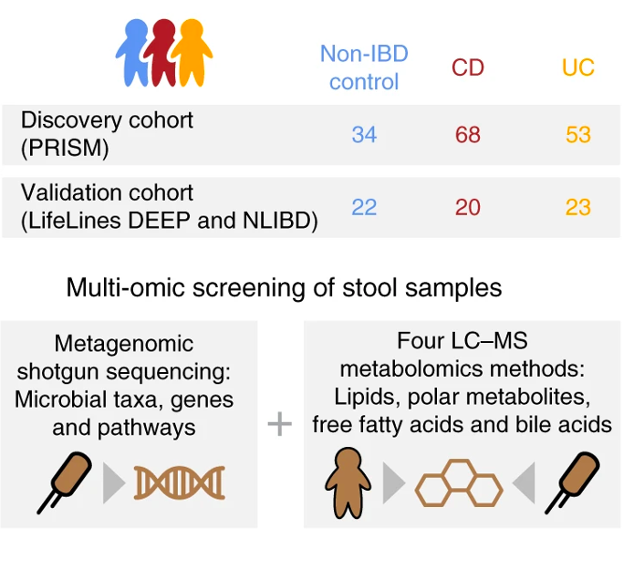

If you run into any setup problems or questions, please feel free to email me at cecilia.noecker at ucsf.edu.
Hopefully you have already installed R, RStudio, and the tidyverse suite of packages for the previous amplicon sequencing tutorial. If you still need to install these, you can find instructions for doing so here. The linked Data/Software Carpentry website includes a lot of other useful resources for learning R and doing scientific data analysis.
For this session, we will create an R Project to organize our analyses. To do so, open RStudio, select File -> New Project… and create a new folder for this project (name it whatever you want).
You will also need to install the following packages:
In this tutorial, we’ll analyze processed datasets made available as part of the large-scale Integrative Human Microbiome Project data resource (a.k.a. HMP2). The study and data are described in Franzosa et al Nature Microbiology, 2019.
In this study, the researchers profiled stool samples from a cohort of individuals with ulcerative colitis, Crohn’s disease, and non-IBD controls. Most subjects were sampled at several time points. These individuals were recruited at 5 different study sites. In the interest of computational feasibility we will focus our analysis on a subset of samples from just 2 sites. Stool samples collected from all subjects were profiled using metagenomics and metabolomics assays, as shown in Figure 1a from the publication:

Note: Two options for downloading the data we’ll use in the workshop are described below. If your computer has at least 8GB of memory and ~500MB of storage available, I recommend working through Option 1, which describes how to download the full dataset from the HMP portal and work through some data processing to prepare it for analysis. This will allow you to practice your R skills and see an example workflow of setting up a re-analysis of a public dataset. However, if your computer has less memory, it might have a hard time processing these tables, in which case you can follow Option 2 to directly download smaller pre-processed datasets.
Follow these instructions to download each of the various data files:
taxonomic_profiles_3.tsv.gz, path_abundances_3.tsv.gz, and ecs_3.tsv.gz. These files are taxonomic abundances, pathway abundances, and abundances of genes linked to EC numbers, produced by the Metaphlan3 + Humann3 pipeline. You can read more about those tools here.HMP2_metabolomics.csv.gzThe code below goes through to HMP2 files to process the data as follows: 1) clean up column names and table organization, 2) subset to a smaller set of samples from 2 study sites, 3) filter low-prevalence features that only appear in a small number of samples.
library(tidyverse)
# Make a sub-folder for storing data
dir.create("data/")
# Read in metadata
metadata <- read_csv("data/hmp2_metadata.csv", col_types = cols(.default = "c"))
# How many samples of each type?
metadata %>% count(data_type)
## Keep just the metadata we want, rename columns we will use frequently
metadata <- metadata %>% filter(data_type %in% c("metabolomics", "metagenomics")) %>% rename(SampleID = `External ID`, SubjectID = `Participant ID`)
#Only keep subjects with both metabolomics and metagenomics samples
subjects_keep <- metadata %>% count(SubjectID, data_type, .drop = F) %>% count(SubjectID) %>% filter(n==2)
metadata <- metadata %>% filter(SubjectID %in% subjects_keep$SubjectID)
metadata %>% count(site_name, diagnosis, data_type) %>% print(n=30)
#Remove sample duplicates that were resequenced
bad_metagenomics_samps <- metadata %>% filter(data_type == "metagenomics") %>% group_by(NewID = gsub("_P$", "", SampleID)) %>% count() %>% filter(n == 2)
metadata <- metadata %>% filter(!SampleID %in% bad_metagenomics_samps$NewID)
## We will just look at the samples from the Cincinnati site to start, and will use the data from the MGH dataset as a test dataset for the machine learning analysis
metadata_cinc_mgh <- metadata %>% filter(site_name %in% c("Cincinnati", "MGH"))
# Only save metadata variables at the participant level (not the sample level), and that actually differ between participants
metadata_long <- pivot_longer(metadata, cols = !SampleID & !SubjectID, names_to = "name", values_to = "value", values_transform = list(value = as.character))
subject_level_vars <- metadata_long %>% group_by(name, SubjectID) %>%
summarise(numVals = length(unique(value[!is.na(value)]))) %>%
group_by(name) %>% summarise(fracSubs = length(numVals[numVals < 2])/length(numVals)) %>%
filter(fracSubs == 1) %>% pull(name) %>% unique()
tot_vals <- metadata_long %>% filter(SampleID %in% c(metadata_cinc_mgh$SampleID) & name %in% subject_level_vars) %>% group_by(name) %>% summarise(numVals = length(unique(value[!is.na(value)]))) %>% filter(numVals > 1)
subject_metadata <- metadata %>% select(any_of(c("SubjectID", "SampleID", "data_type", tot_vals$name)))
subject_metadata_mgh_cinc <- subject_metadata %>% filter(site_name %in% c("MGH", "Cincinnati"))
# Save read QC information for metagenomic samples
read_metadata_mgh_cinc <- metadata %>% filter(data_type == "metagenomics" & site_name %in% c("MGH", "Cincinnati")) %>% select(contains("reads")|contains("External ID")|contains("site_name"))
# Save cleaned-up tables from each site
for(site in c("MGH", "Cincinnati")){
write_tsv(filter(subject_metadata_mgh_cinc, site_name == site), path = paste0("data/subject_metadata_", site, ".tsv"))
write_tsv(filter(read_metadata_mgh_cinc, site_name == site), path = paste0("data/read_metadata_", site, ".tsv"))
}# Read in file, get sample subsets, rename columns, save
taxa_abundances <- read_tsv("data/taxonomic_profiles_3.tsv.gz")
for(site in c("MGH", "Cincinnati")){
site_samples <- filter(subject_metadata_mgh_cinc, site_name == site)$SampleID
taxa_abund <- taxa_abundances %>% select(any_of(c(names(taxa_abundances)[1], paste0(site_samples, "_profile"))))
colnames(taxa_abund) = c("Feature", gsub("_profile", "", colnames(taxa_abund)[2:ncol(taxa_abund)]))
write_tsv(taxa_abund, path = paste0("data/taxa_profile_", site, ".tsv"))
}
rm(taxa_abundances)
rm(taxa_abund)Gene family and pathway abundance data have already been normalized to an RPKM-like metric in these tables (read counts or pathway copies per kilobase length per million reads). This normalization approach does not address compositional bias in the data, but for the sake of simplicity we will proceed with these quantities.
# Read in file, get sample subsets, rename columns, split row IDs into EC number and Taxon, filter features present in less than 3 samples, save
ecs <- read_tsv("data/ecs_3.tsv.gz")
for(site in c("MGH", "Cincinnati")){
site_samples <- filter(subject_metadata_mgh_cinc, site_name == site)$SampleID
ecs1 <- ecs %>% select(any_of(c(names(ecs)[1], paste0(site_samples, "_level4ec"))))
colnames(ecs1) = c("Feature", gsub("_level4ec", "", names(ecs1)[2:ncol(ecs1)]))
ecs1 <- mutate(ecs1, EC = gsub("\\|.*", "", Feature), Taxon = gsub(".*\\|", "", Feature))
ec_samps <- apply(select(ecs1, !Feature & !Taxon & !EC), 1, function(x){ length(x[x != 0])})
ecs_keep <- which(ec_samps >= 3)
ecs1 <- ecs1[ecs_keep,]
write_tsv(ecs1, path = paste0("data/ECnumber_profile_", site, ".tsv"))
}
rm(ecs)
rm(ecs1)# Read in file, get sample subsets, rename columns, split row IDs into Pathway and Taxon, filter features present in less than 3 samples, save
pathway_data <- read_tsv("data/pathabundances_3.tsv.gz")
for(site in c("MGH", "Cincinnati")){
site_samples <- filter(subject_metadata_mgh_cinc, site_name == site)$SampleID
pathways1 <- pathway_data %>% select(any_of(c(names(pathway_data)[1], paste0(site_samples, "_pathabundance_cpm"))))
colnames(pathways1) = c("Feature", gsub("_pathabundance_cpm", "", names(pathways1)[2:ncol(pathways1)]))
pathways1 <- mutate(pathways1, Pathway = gsub("\\|.*", "", Feature), Taxon = gsub(".*\\|", "", Feature))
pathways1 <- pivot_longer(pathways1, cols = names(pathways1)[2:(ncol(pathways1)-2)], names_to = "Sample")
bad_pathways <- pathways1 %>% filter(value != 0 & !is.na(value)) %>% count(Feature) %>% filter(n < 3)
pathways1 <- pathways1 %>% filter(!Feature %in% bad_pathways$Feature) %>% pivot_wider(id_cols = c("Feature", "Pathway", "Taxon"), names_from = "Sample", values_from = "value")
write_tsv(pathways1, path = paste0("data/pathway_profile_", site, ".tsv"))
}
rm(pathway_data)
rm(pathways1)# Read in file, get sample subsets, filter features present in less than 3 samples, save
metabolites <- read_csv("data/HMP2_metabolomics.csv.gz")
for(site in c("MGH", "Cincinnati")){
site_samples <- filter(subject_metadata_mgh_cinc, site_name == site & data_type == "metabolomics")$SampleID
metabolites1 <- metabolites %>% select(any_of(c(names(metabolites)[1:7], site_samples))) %>%
pivot_longer(metabolites1, cols = names(metabolites1)[8:ncol(metabolites1)], names_to = "Sample")
# We will filter metabolite features present in very few samples
bad_metabolites <- metabolites1 %>% filter(value != 0 & !is.na(value)) %>% count(Compound) %>% filter(n < 3)
metabolites1 <- metabolites1 %>% filter(!Compound %in% bad_metabolites$Compound) %>% pivot_wider(names_from = "Sample", values_from = "value")
write_tsv(metabolites1, path = paste0("data/metabolite_profile_", site, ".tsv"))
}
rm(metabolites)
rm(metabolites1)
# ## Various MS methods used
# metabolites %>% group_by(Method) %>% summarize(nFeat = length(unique(Compound)))If needed, you can download smaller pre-filtered versions of the tables at the links below. Save these archives in your R project folder and uncompress them.
download.file("https://cnoecker.github.io/MultiOmicsTutorial/downloads/IBD_metagenomics.tar.gz", destfile = "IBD_metagenomics.tar.gz")
untar("IBD_metagenomics.tar.gz")
download.file("https://cnoecker.github.io/MultiOmicsTutorial/downloads/IBD_metabolomics.tar.gz", destfile = "IBD_metabolomics.tar.gz")
untar("IBD_metabolomics.tar.gz")
download.file("https://cnoecker.github.io/MultiOmicsTutorial/downloads/IBD_metadata.tar.gz", destfile = "IBD_metadata.tar.gz")
untar("IBD_metadata.tar.gz")